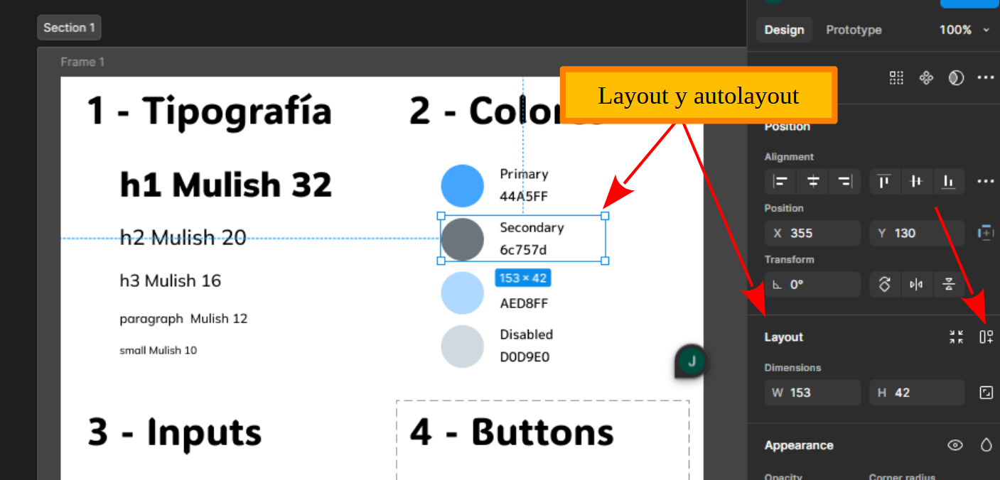

| Resultados de aprendizaje de la unidad didáctica: |
|---|
| RA. 1: Planifica la creación de una interfaz web valorando y aplicando especificaciones de diseño. |
| Criterios de evaluación de la unidad didáctica: |
|---|
| CE. d) Se ha valorado la importancia de definir y aplicar la guía de estilo en el desarrollo de una aplicación web. |
| Licencia Creative Commons: | |
|---|---|
 |
Reconocimiento-NoComercial-CompartirIgual CC BY-NC-SA: No se permite un uso comercial de la obra original ni de las posibles obras derivadas, la distribución de la cuales se debe hace con una licencia igual a la que regula la obra original. |
| --- |
1. Primeros pasos con Figma
1.1. - ¿Qué es Figma?
Figma es una herramienta de diseño de interfaces y prototipado principalmente basada en la nube. Permite a diseñadores y desarrolladores colaborar en tiempo real en la creación de todo tipo de productos digitales.
En la actualidad es la herramienta mejor valorada entre diseñadores web para crear guías de estilo y realizar prototipado web gracias a su enfoque colaborativo, su flexibilidad y sus potentes funcionalidades:
Guías de estilo
✅ Componentes reutilizables (botones, tarjetas, iconos, ...) que se actualizan en toda la interfaz al realizar cambios en el componente principal.
✅ Bibliotecas de diseño: Permiten compartir estilos de texto, colores, efectos y componentes entre diferentes proyectos o equipos.
✅ Plugins para documentación: Figma Tokens o Design Lint ayudan a gestionar los estilos y asegurar que todo el diseño siga las guías establecidas.
Prototipado web
✅ Interactividad sin código: Se pueden enlazar pantallas, agregar transiciones y simular navegación entre páginas sin necesidad de programar.
✅ Prototipos animados: Figma permite realizar animaciones sin código.
✅ Diseño colaborativo en tiempo real: Diseñadores, desarrolladores y clientes pueden comentar y editar al mismo tiempo.
✅ Con plugins como Figma to Code, es posible extraer CSS, HTML y hasta frameworks como React.
✅ Integración con otras herramientas de desarrollo como, por ejemplo, GitHub..
1.2. - Registro, creación de un grupo y un proyecto
 El acceso a Figma se realiza desde https://www.figma.com/ .
El acceso a Figma se realiza desde https://www.figma.com/ .
 Tras el registro y verificación del correo, podremos poner un nombre al equipo de trabajo e invitar a otros colaboradores (existen limitaciones para las cuentas gratuitas).
Tras el registro y verificación del correo, podremos poner un nombre al equipo de trabajo e invitar a otros colaboradores (existen limitaciones para las cuentas gratuitas).
 Una vez en el área de trabajo, Figma nos propone crear un primer proyecto.
Una vez en el área de trabajo, Figma nos propone crear un primer proyecto.
 Una vez dentro de la carpeta del proyecto, podemos empezar a añadir ficheros. En concreto, podemos añadir un nuevo diseño (design file) o un lienzo en blanco sobre el que volcar ideas, diagramas, etc. (FigJam file)
Una vez dentro de la carpeta del proyecto, podemos empezar a añadir ficheros. En concreto, podemos añadir un nuevo diseño (design file) o un lienzo en blanco sobre el que volcar ideas, diagramas, etc. (FigJam file)
Nota: Una de las características de Figma es su comunidad de usuarios. Para acceder a los recursos libres o de pago disponibles, seguir el enlace "Explore Community", ubicado en la parte inferior izquierda de la pantalla Files de Figma.
1.3. - Interfaz de diseño
Después de crear un grupo y un archivo nos aparecerá la interfaz de creación de contenidos de figma.
Esta interfaz de Figma se divide en tres grandes bloques:
En la parte izquierda encontramos la interfaz para la gestión de los archivos y sus capas.
La parte central es el área de trabajo, donde iremos diseñando el prototipo.
En la columna de la derecha encontramos las opciones específicas del elemento que tengamos seleccionado.
Para terminar, en el area de trabajo encontraremos las herramientas de cursor, frames, formas, pluma, texto, comentarios, acciones y Dev Mode.
1.4. - Page, layers y shortcuts.
Dentro de la interfaz de diseño tendremos 3 grandes apartados:
Page: Páginas que utilizaremos para realizar nuestros diseños.
Layers: Como la mayoría de los programas de diseño, figma usa el modelo de capas para estructurar los diseños.
Shortcuts: Si pinchamos en Help accederemos en una serie de recursos dentro de los cuales tenemos Keybord shortcuts, que, con el uso, nos permitirá diseñar de una forma mucho más ágil.
1.4. - Frame, section y slice
Frame: Contenedor que funciona como un marco de trabajo donde se organizan y diseñan elementos como pantallas, secciones de una interfaz o componentes reutilizables. Dentro de ese marco crearemos secciones.
Section: Área que agrupa múltiples elementos para mejorar la organización del diseño. Se usa principalmente para estructurar proyectos grandes y facilitar la navegación dentro del archivo.
Slice: Es una herramienta que permite definir áreas específicas de un diseño para exportarlas como imágenes, sin necesidad de exportar elementos completos. Útil para extraer partes específicas sin afectar la composición general.
1.5. - Insertar comentarios
Figma dispone de la insersión de comentarios que pueden servir para recordatorios o facilitar la colaboración y la retroalimentación en el caso de proyectos donde trabaja un equipo de diseñadores.
1.6. - Layout y autolayout
Layout y Auto Layout son conceptos importantes para la organización y distribución de los elementos en el diseño.

1.6.1. - Layout
El layout se refiere a las guías y reglas que ayudan a estructurar el contenido dentro de un Frame. Es la opción que se utiliza por defecto.
El layout se compone de:
✅ Grids (rejillas): Permiten organizar elementos con alineaciones precisas.
✅ Columnas y filas: Útiles para diseños responsivos y basados en cuadrículas.
✅ Constraints (Restricciones): Definen cómo se ajustan los elementos cuando cambia el tamaño del frame.
1.6.2. - Auto Layout en Figma
Auto Layout es una funcionalidad avanzada que permite a los elementos adaptarse automáticamente según su contenido. Como lo veremos más adelante, esta funcionalidad es sobretodo útil, en la parte de diseño de una interfaz web .
Auto layout permite entre otros:
✔️ Distribución automática: Los elementos se ajustan de forma dinámica según el tamaño y el espaciado definido.
✔️ Alineación flexible: Se pueden alinear elementos en horizontal o vertical con espaciado automático.
✔️ Redimensionamiento dinámico: Los componentes pueden cambiar de tamaño dependiendo del contenido.
✔️ Ideal para botones y listas: Se usa mucho en componentes reutilizables como tarjetas, menús o formularios.
1.7. - Grids
Los grids o cuadrículas, permiten estructurar los diseños facilitando el diseño responsivo.
Figma ofrece tres tipos de grids que se pueden aplicar a frames y componentes:
Cuadrícula (Grid)
Columnas (Columns)
Filas (Rows)
2. Tarea RA1-CEd - Creación de una plantilla de guía de estilo con Figma
Crear un diseño de una guía de estilo similar a la de la siguiente imagen.

Nota: La finalidad del ejercicio es iniciarse en el manejo de Figma y familiarizarse con las guías de estilos.
En Figma, las guías de estilo se crean principalmente mediante estilos y variables de diseño, no simplemente dibujándolas en pantalla:
- Variables en Figma (recomendado)
- Desde 2023, Figma permite definir variables para colores, tamaños, espaciados, radios de borde, etc.
-
Se pueden reutilizar en múltiples componentes y actualizar globalmente.
-
Estilos de Figma (obsoleto)
- Puedes crear estilos globales para colores, tipografías, efectos y grids.
-
Se aplican a múltiples elementos y permiten cambios consistentes.
-
Dibujar manualmente (mala práctica)
- Aunque se puede dibujar guías visuales, este método no es recomendable porque no es escalable ni reutilizable.